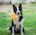

"Lugar mais lindo e mais cheio de amor que conheço. Dá gosto de ver como os proprietários cuidam de cada pedacinho e de cada animal que tem lá. Muito amor por esse lugar"
"Excelente canil com ótimos profissionais e com os dourados mais espertos que já conheci."

Atila Rodrigues Adestrador
"Experimentamos, pela primeira vez, viajar e deixar nossa filha hospedada num hotel de cães. Confesso que ficamos apreensivos, mas ficamos muito satisfeito com o atendimento e principalmente com o carinho que nossa filha de 4 patas recebeu lá. Viramos clientes e indicamos!!!"
"Canil sério, competente e engajado na melhoria da raça! Não há como não sair revigorado de um lugar tão cheio de paz e boas vibrações!"
"Excelente Canil pra quem procura um Golden Retriever
A estrutura é excelente, temos o acompanhamento e o
apoio que a gente precisa pra cuidar dos peludinhos.
De total confiança seja pra deixá-los pro day care, hospedagem,
e acompanhar as atividades de natação que são oferecidas por lá.
Confio de olhos fechados e coração tranquilo. Recomendo demais!!!"
"Fui conhecer o Vivah porque estamos, minha família e eu,
na expectativa de voltar a ter um peludinho em nossas vidas.
Queria que nossa futura princesinha viesse pelas mãos de gente
que ama o que faz. E posso dizer que minha expectativa foi
superada pelo que encontrei. Sentadas no chão, com aquelas
fofas à vontade brincando com a gente e trocando carinhos e
afagos, eu tive o prazer de conversar, conhecer melhor e me apaixonar.Parabéns!"
"Amei tudo isso,excelente trabalho e
dedicação aos nossos amiguinhos lindos e amáveis!!!"
"Melhor canil, estrutura, confiança e animais lindos e saudáveis!!"
"Lugar cheio de fofura e amor, espaço lindo, ótimo local para natação dos dogs."
"Lugar repleto de amor e dedicação. Os Pets são cuidados um a um, local super
higiênico e um ambiente repleto de natureza e paz."